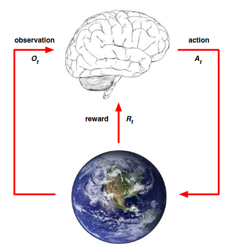
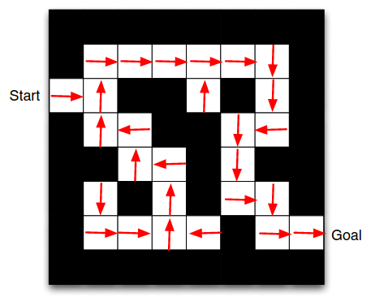
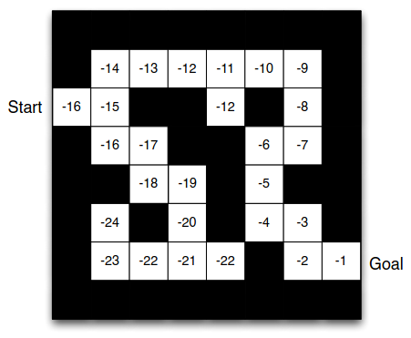
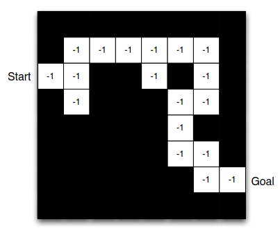

Introduction to Reinforcement Learning
Lecture 1: Introduction to Reinforcement Learning
About Reinforcement Learning
Reinforcement learning is different from other ML paradigms.
- The is no supervisor, only a reward signal. We do not fit a model to some data,
instead, we have an agent operating in some environment where it gets positive or negative
feedback based on its actions. It is a trial and error paradigm.
- Feedback is delayed, not instantaneous. In RL a decision is made now, but the reward
can come a lot later.
- Time really matters in RL. This is sequential. Non iid data.
- Perhaps the most important distinction: in RL an agent's action will influence
the subsequent data that it sees.
The Reinforcement Learning Problem
- A reward $R_t$ is a scalar feedback signal
- Indicates how well the agent is doing at step t
- The agent's job is to maximise cumulative reward.
Definition: Reward Hypothesis
All goals can be described by the maximisation of expected cumulative reward
Some examples of rewards:
- Stunt helicopter
- Positive reward: following desired trajectory
- Negative rewar: crashin
-
Backgammon
- Positive/negative rewards for winning/losing a game
-
Manage an investment portfolio
- Positive reward for funds in the bank
-
Make a humanoid robot walk
- Positive reward for forward motion
- Negative reward for falling over
Sequential Decision Making
The goal is to
select actions to maximise total future reward. What actions can we take
that will give the largest future award? Because of the delayed reward, it might be beneficial
to do a bad step now in order to gain a huge reward in the future. A greedy approach will typically
not work.
Agent and Environment
We will illustrate the agent/environment setup with the following image:

The brain represents the agent. This is what we control and what we want to build.
The brain is responsible for deciding what action to take. At each step the action
is decided by the observation it sees, and it gets some reward signal of how good
the step was. This is all the agent really sees.
The trial/error loop is basically a time series of observations, rewards and actions
which defines the experience of the agent - and this experience is the data we use
in RL.
History and State
The
history is a sequence of observations, actions and rewards:
$$
H_t = A_1,O_1,R_1, \ldots, A_t,O_t,R_t
$$
A collection of everything the agent has seen at time step t. All the
observable variables.
(There might be others, but since we can't see them they are irrelevant).
What happens next depends on the history. We think of this as a mapping from history to some action.
Making this mapping is the goal of RL. However, the entire history is not that useful, because it
can become large. Instead, we focus on
state which we use to replace the history.
Formally, state is a function of history:
$$
S_t = f(H_t)
$$
We distinguish between the environment state $S_t^e$, which is mostly invisible to the agent, and the
agent state: $S_t^a$. The agent state comprises whatever information the agent uses to pick the next
action - so the information used by the RL agent. It can be any function of the history:
$$
S_t^a = f(H_t).
$$
Information State
Here is a more mathematical definition of state.
An
information state, also known as the
Markov state contains all useful
information from the history.
Defintion: Markov State
A state St is Markov iff
$$
P(S_{t+1}|S_t) = P(S_{t+1}|S_1,\ldots,S_t)
$$
The probability of the next state given the current state, is the same as if we
conditioned on all the history. The future is independent of the past, given the
present. Informally: we can throw away the entire past. Expressed in another way,
the current state is a sufficient statistic of the future.
In a
fully observable environment, the agent directly observes the environment
state. So $O_t = S_t^a = S_t^e$. Formally, this is a
Markov decision process (MDP).
In
partially observability (e.g. Robot with a camera, poker player agent), the agent
indirectly observes the environment. Now the agent state is different from the environment
state. This is a
partially observable Markov decision process (POMDP). In this case,
the agent must construct its own state representation $S_t^a$. For instance:
- Remember complete history: $S_t^a = H_t$
- Belief of environment state - a kind of Bayesian approach - which is a way
to "guess" what the environment state is.
$$
S_t^a = (P(S_t^e = s^1), \ldots, P(S_t^e = s^n))
$$
- We can define an RNN, where we use a linear combination of the previous state
and the current observation, which gives a new state.
$$
S_t^a = \sigma(S_{t-1}^aW_s + O_tW_o)
$$
Inside an RL Agent
An RL agent may include one or more of these components (note: this is not an exhaustive list,
but these are most common components).
- Policy: agent's behavious function. Map from state to action
- Value function: how good is each state and/or action. Prediction of future reward
- Model: agent's representation of the environment. Predicts environments, transitions
to next state (dynamics) or predits the next, immediate reward.
Model-free RL is very common, where the model is completely ommitted.
Illustrating the different approaches with a simple maze example. The first is
an example of a policy, which what action the agent should take in the different
cells in the maze. Denoted by $\pi(s)$ for each state s.

The following is an example of a value function, displaying the value for each state.
For instance, in the cell next to the goal the value -1 (penalty for each step).
Denoted by $v_\pi(s)$ where $\pi$ is some policy as the value function depends on it.
With these values, it is easy to find an optimal policy.

The model displays the immediate reward for each state s. A "map" of the environment
as it is understood by the agent.

The RL agents can be categorized in different ways, policy based, value based, a hybrid
which is called an actor critic. These can be model free agents, and there is a model
based RL agent, which can be policy and/or value based.
Problems within Reinforcement Learning
Learning and Planning
There are two fundamental problems in sequential decision making.
- In Reinforcement Learning, the environment is initially unknown.
The agent interacts with the environment and through the feedback,
it figures out a policy to maximise reward.
- In Planning, we specify the environment, e.g. all the rules of the game.
The agent performs computations with its model, without any external interaction.
As a result, the agent improves its policy
For building a gameplayer in Atari, we use RL. The Planning problem would be if we provided
a perfect, transparent Atari emulator, the agent can find an optimal policy with, say, tree search.
Another key part of RL is to balance exploration and exploitation. We must find the best possible
policy, without losing too much reward along the way. Even if we have a good policy, it might not
be the optimal policy, so we must explore to make sure we don't lose out.